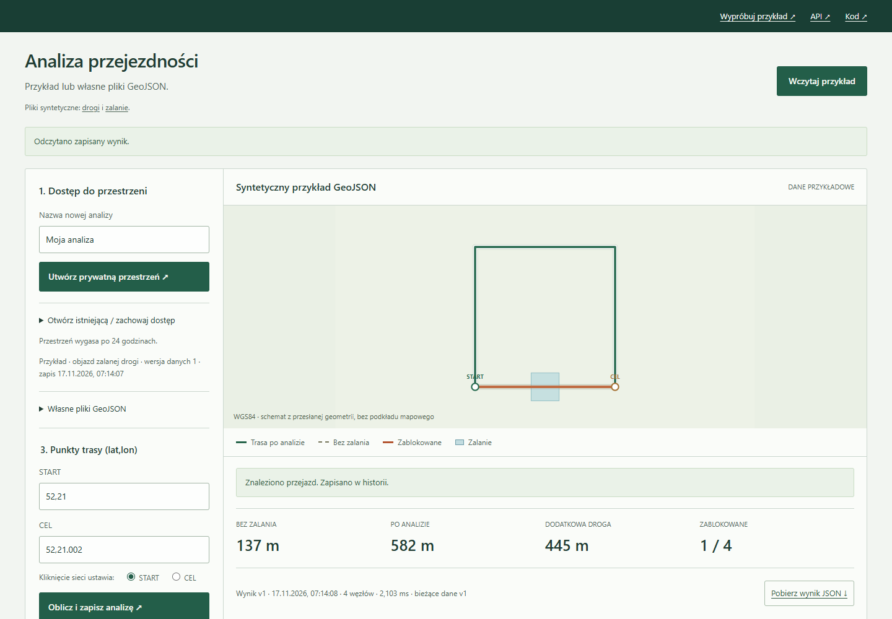

← Projects and work
SentinelHub
Detours calculated from a road graph and flood areas.
The API combines road and flood GeoJSON, calculates a detour and saves the result with its input version.

Implementation
- NetworkX MultiDiGraph and Shapely: geometry intersections, segment exclusions and distance-weighted shortest paths.
- FastAPI validates WGS84 geometry, source, date and limits. Invalid or missing data is never treated as no flooding.
- SQLite stores dataset versions and history. Workspace keys isolate visitors; revision checks reject conflicting changes.
Verification
The synthetic example gives 137 m without flooding and a 582 m detour. Tests cover routing, validation, isolation, history and SQLite backup/restore.
Limitations
WMS ingestion is unavailable after account expiry. The demo uses sample or uploaded GeoJSON, not current flood observations. The model does not assess traffic, water depth, bridges or access to the snapped node; it is not an evacuation tool.